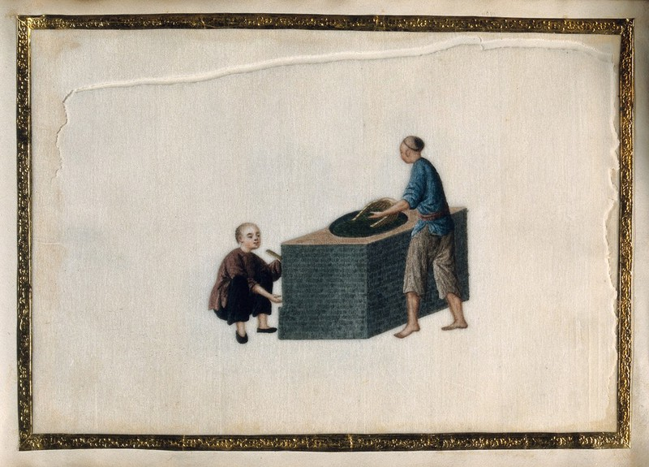
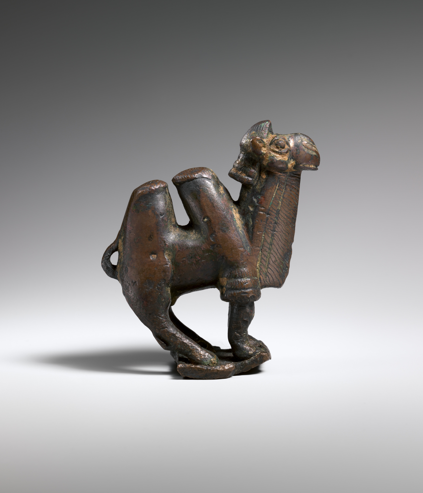
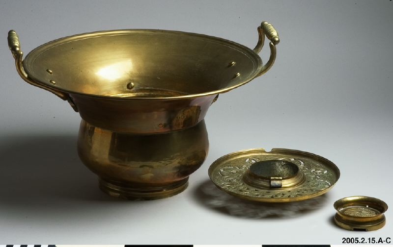

01 / 中国 · CHINA
砖茶：生产与贸易
紧压茶便于储存与长途运输，体现中国制茶工艺如何适应远距离贸易。
茶叶不只是商品。它从中国出发，经过商队和边境贸易进入俄罗斯，也在不同社会中发展出独特的饮用方式。通过三件代表性器物，了解万里茶道如何连接不同文化。
点击博物馆入口，可以深入观察相关展品；这里的历史图像与数字模型有不同的出处及性质。

紧压茶便于储存与长途运输，体现中国制茶工艺如何适应远距离贸易。

路线连接商人、驿站与城市，茶叶流通也意味着不同语言和生活经验的交流。

茶进入俄罗斯后逐渐融入当地家庭与社交生活，茶炊成为具有代表性的器物。
不同地区的饮茶方式各有特色。茶叶、茶具与泡茶程序共同体现地方技艺与社交礼仪。
俄罗斯茶文化逐渐形成自己的器物、待客方式和家庭场景，与来自中国的茶叶贸易建立历史联系。
本专题使用本站本地收藏的历史图像、器物参考照片及数字展陈素材。相关展品可能包括历史原件照片、参考器物及艺术复原，不能视为同一性质。请以各展品的来源标注为准。
查看图像来源清单